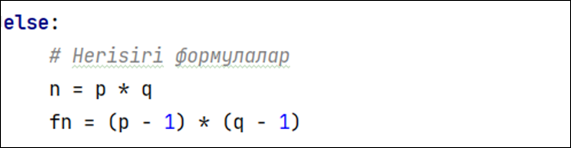

RSA (Rivest-Shamir-Adleman)– – ашық кілтті криптографиялық алгоритм.
Ол 1977 жылы Рон Ривест, Ади Шамир және Леонард Адлеман тарапынан жасалды. RSA алгоритмі сандардың үлкен көбейткіштерге жіктелуінің күрделілігіне негізделген. Ол екі кілтті қолданады:
Бұл жерде біз RSA алгоритмінің жұмысын Python тілінде іске асырамыз. Берілген параметрлер:
Негізгі формулалар: n = p * q және φ(n) = (p-1) * (q-1) мәндерін есептейміз.
RSA алгоритмі асимметриялық криптография әдістерінің бірі болып табылады. Бұл әдіс p және q жай сандарын пайдаланып, ашық және жабық кілттерді есептеуге негізделген. Шифрлау C = Me mod n формуласымен, ал кері шифрлау M = Cd mod n формуласы арқылы жүзеге асады.
Бұл алгоритм кеңінен қолданылады және берілген кілттер ұзындығына байланысты қауіпсіздік деңгейі жоғары болып саналады.
1-тапсырма: Берілген параметр:
Шифрмәтінді (C) табыңыз.
2-тапсырма: Дешифрлау
Мысалдағы 38 шифрланған мәтінін дешифрлайтын бағдарлама құрыңыз.
3-тапсырма: Шифрлау
"CRYPTO" сөзін шифрлаңыз. ("CRYPTO" мәтінін ASCII кодыңа түрлендіріңіз)
Параметрлер: